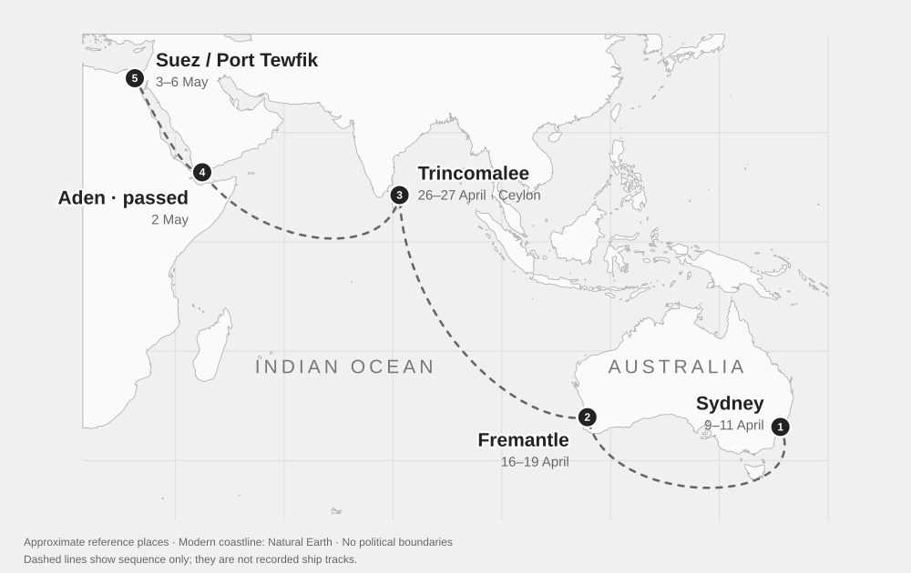

9–11 April 1941
Embarkation, Sydney
Left Sydney on Queen Elizabeth 11/4/41

Routes are approximate: dashed at sea, solid for the recorded train journey. Pins mark localities; the dashed pin marks a recorded destination and the square pin an undated drawing. Modern map labels are shown.
9–11 April 1941
Left Sydney on Queen Elizabeth 11/4/41
Chronology and source passagesDownload chronologyGeographic sources